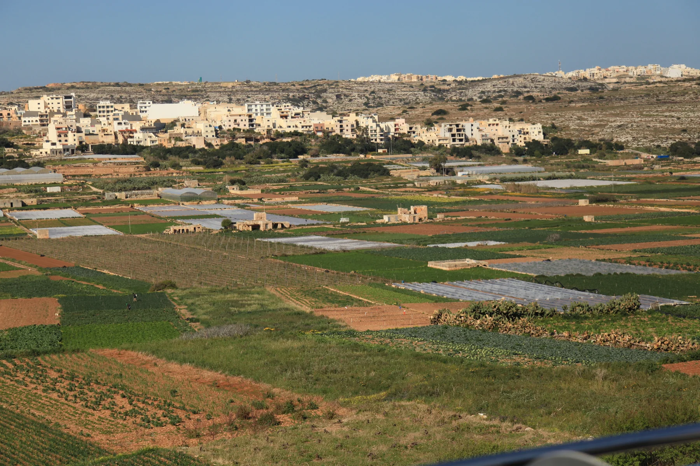

The present parish church and the old St Joseph church are distinct Manikata anchors. Neither proves that a listing is central, quiet, accessible or church-facing.
MANIKATA · START WITH THE EXACT ADDRESS
A village read through land, parish and road.
Manikata is a named village within the wider Mellieħa council territory. Its parish setting, agricultural edge and outer approaches belong in one careful guide, while Mellieħa town, Għadira and the north-west coast remain distinct property contexts.

A VILLAGE INSIDE A WIDER LOCALITY
Keep Manikata specific without drawing a false border.
Mellieħa Local Council identifies Manikata as a nearby village within its locality. No reviewed authority source supplies a convenient street-by-street estate-search boundary, so the address, entrance, frontage and road context must lead every property viewing.
The local cooperative documents farmer support and Ir-Razzett tal-Qasam. That grounds the village's agricultural context but says nothing automatic about a particular field, view or property.
Manikata sits in Malta's north-west landscape, but village roads, farmland, beaches and protected coast are not interchangeable endpoints. Check each real route and terrain.
Ir-Razzett tal-Qasam is a documented rural anchor.
Koperattiva Rurali Manikata says it was established in 2008 to support local farmers and safeguard rural life, with protection and restoration work centred on Ir-Razzett tal-Qasam. This is real local context, not a claim about all surrounding land.
Cooperative source ↗Programmes require a fresh check.
The cooperative published a supervised 2026 Summer Club running from 30 June to 10 September. It shows one kind of local educational activity; it is not a permanent timetable or proof of current booking, price, age rules or access.
2026 programme source ↗AUTHORITY-, REGULATOR- AND OPERATOR-BACKED EXAMPLES
Everyday, food, heritage and activity anchors.
These examples establish context without becoming a ranking or full directory. They do not promise current opening, prices, availability, appointments, access, parking or distance from a property.
Mosta catchment
Primary HealthCare's May 2026 charter places Manikata in the Mosta Health Centre catchment and lists Mellieħa as the associated community clinic. Confirm the appropriate service and appointment route directly.
Authority source ↗Manikata Church
Mellieħa Local Council lists Manikata Church among the area's churches and chapels. Service times, public access, accessibility, parking and any route across church property remain current checks.
Council source ↗Old St Joseph church
The Restoration Directorate records the older church built in 1919–20 for the farming community and superseded by the larger church in 1975. Current entry and access are not implied.
Restoration source ↗Country Bar and Restaurant
The Malta Tourism Authority register lists this Triq il-Manikata venue under licence RST-13232. It is one regulated example, not a recommendation; check menu, hours, booking and access directly.
MTA register ↗Mellieħa town and the coast keep their own names.
Mellieħa's hill town, Għadira, Selmun, Marfa and Ċirkewwa remain separate search contexts. Għajn Tuffieħa, Golden Bay and Majjistral can help regional orientation, but no beach access, short walk, view or coastal amenity belongs to every Manikata address.
No shortcut across a field becomes a walking route.
This edition draws no village boundary, generic walk, bus timetable, road-traffic ETA, taxi price or ferry. Walking geometry, bus schedules, current car estimates and taxi observations require exact endpoints, a named mode, source and timestamp. No route may cut across fields, protected land, cliffs or water.
Load the village and agricultural edge only when useful.
The broad OpenStreetMap frame shows Il-Manikata in its surrounding landscape for orientation. It draws no administrative or property-search boundary, venue pin, route, coastal shortcut or journey time and loads only after your click.
Mellieħa Local Council · council churches and chapels · Primary HealthCare quality charter · Restoration Directorate · government restoration release · Koperattiva Rurali Manikata · 2026 Summer Club record · Ministry for Tourism rural-destination record · MTA licence register · Wikimedia Commons image record
_01_ies.jpg){kind=link}
No ranking, current opening, property-specific route, guaranteed view, parking claim, accessibility promise, coast access or locality-wide journey time is claimed.